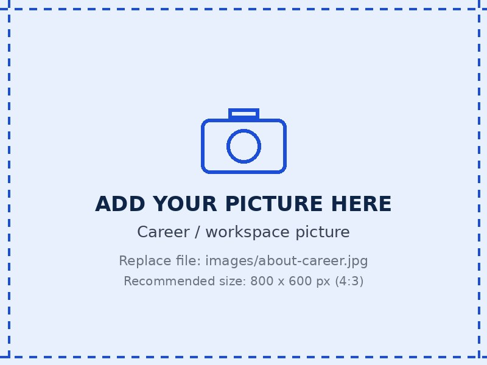
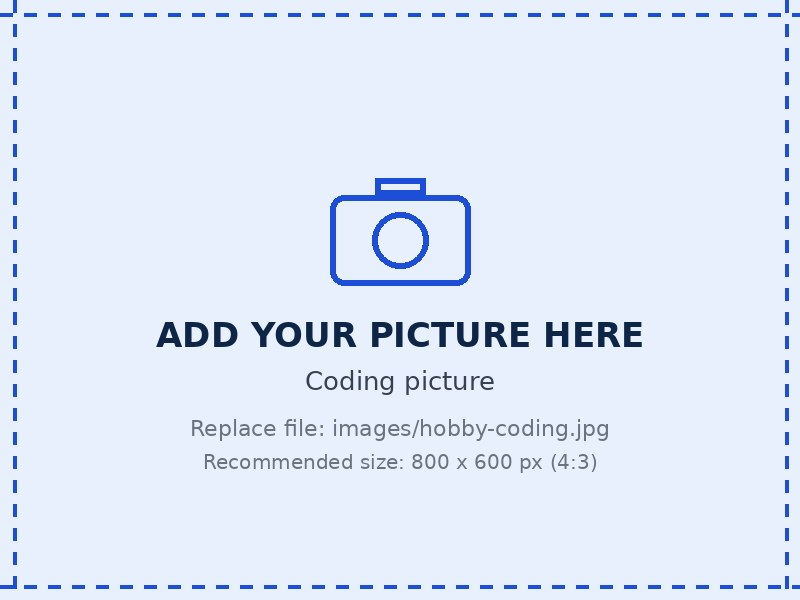
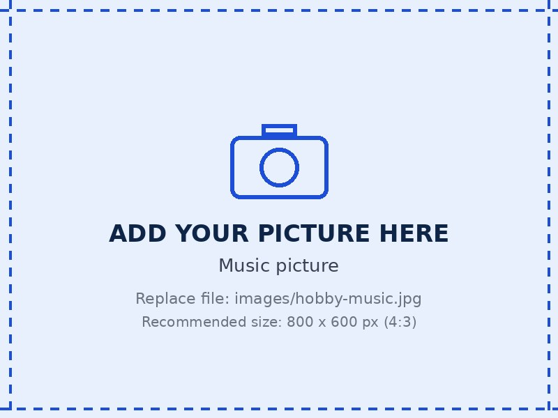
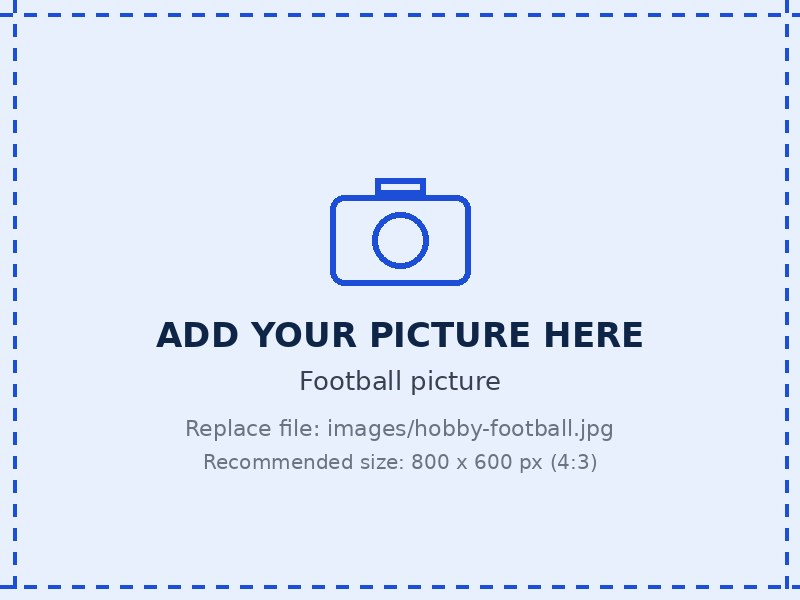

Short-Term Goals
- Master HTML, CSS and JavaScript fundamentals
- Build a strong portfolio of practical projects
- Learn version control with Git and GitHub
- Complete my degree with strong results
My education, ambitions, skills and interests
I am Eberechukwu Prosper Chibuike, a determined and curious student who believes technology is one of the best tools for solving everyday problems. My interest in computing started when I realised that every app, website and online service I used was created by people who once sat where I am now – learning, experimenting and making mistakes.
That realisation motivated me to study computing seriously. I now spend my time learning how software works, practising with small projects, and building the discipline needed to manage a demanding academic schedule. I am hard-working, patient with difficult problems, and always willing to ask questions and learn from others.
My education has given me both the foundation and the discipline to pursue a career in technology. Below is a summary of my academic path, followed by the courses and skills I am currently developing.
| Period | Institution | Programme / Level |
|---|---|---|
| Present | MIVA Open University | B.Sc. Computer Science (in progress) |
| Previous | Secondary School | Senior Secondary Certificate |
| Previous | Primary School | First School Leaving Certificate |
| Course | Focus area | What I am gaining |
|---|---|---|
| Google IT Support Certification - Coursera | Technical Support Fundamentals, The Bits and Bytes of Computer Networking, Operating Systems and You: Becoming a Power User, System Administration and IT Infrastructure Services, IT Security: Defense against the digital dark arts | https://coursera.org/verify/professional-cert/FE451K8SNIM6 |
| IC3 Digital Literacy Certification | Common program functions, Word processing, Spreadsheet, Presentation, Database Basics | Writing clear algorithms and structured code |
| Networking Basics Certificate - Cisco Networking Academy | Network Technician | Writing clear algorithms and structured code |
| Certified Digital Skills Trainer - Computer Professionals of Nigeria | Digital Skill Trainer | Understanding how computer systems work together |
I see myself working in a team that values quality and creativity, building applications that people rely on every day. I also hope to use my skills to help small businesses and organisations establish a useful online presence.

These percentages reflect my current confidence level. I am actively improving each one through coursework and personal practice.
I structure pages with semantic HTML, style them with CSS using Flexbox, Grid and media queries, and add behaviour with JavaScript through event handling and DOM manipulation.
I break big problems into small steps, test as I go, and debug patiently. Working with arrays, functions and conditions has sharpened my logical thinking.
Time management, teamwork, clear communication and a willingness to learn quickly. These help me deliver work on time and collaborate well with others.

I enjoy experimenting with small ideas such as calculators, quizzes and layouts. They keep my skills sharp and remind me why I love building things.
I follow tech articles, tutorials and developer communities to keep up with new tools, trends and best practices in web development.

Music helps me focus while studying and relax after a long day. A good playlist makes long coding sessions far more enjoyable.

Playing and watching football teaches teamwork, discipline and resilience – qualities that carry over into my academic and professional life.